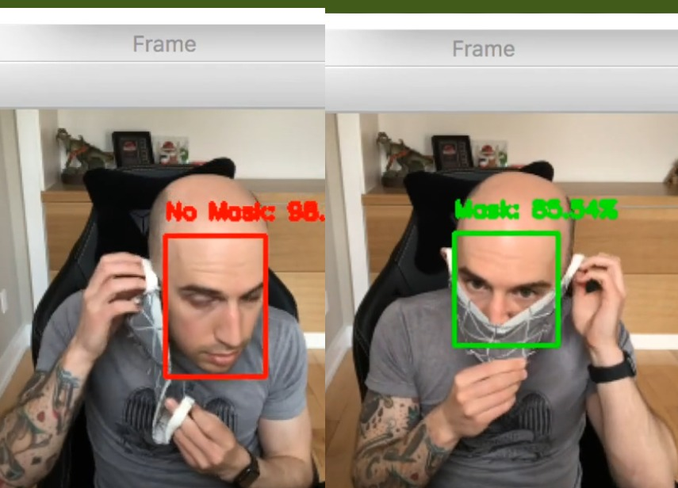
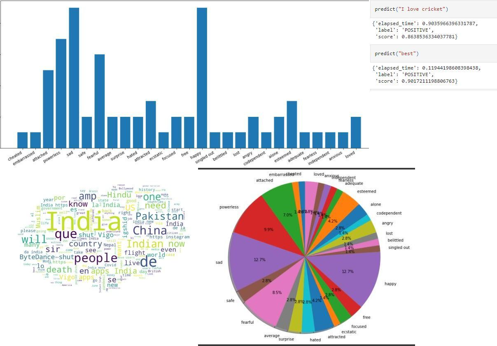
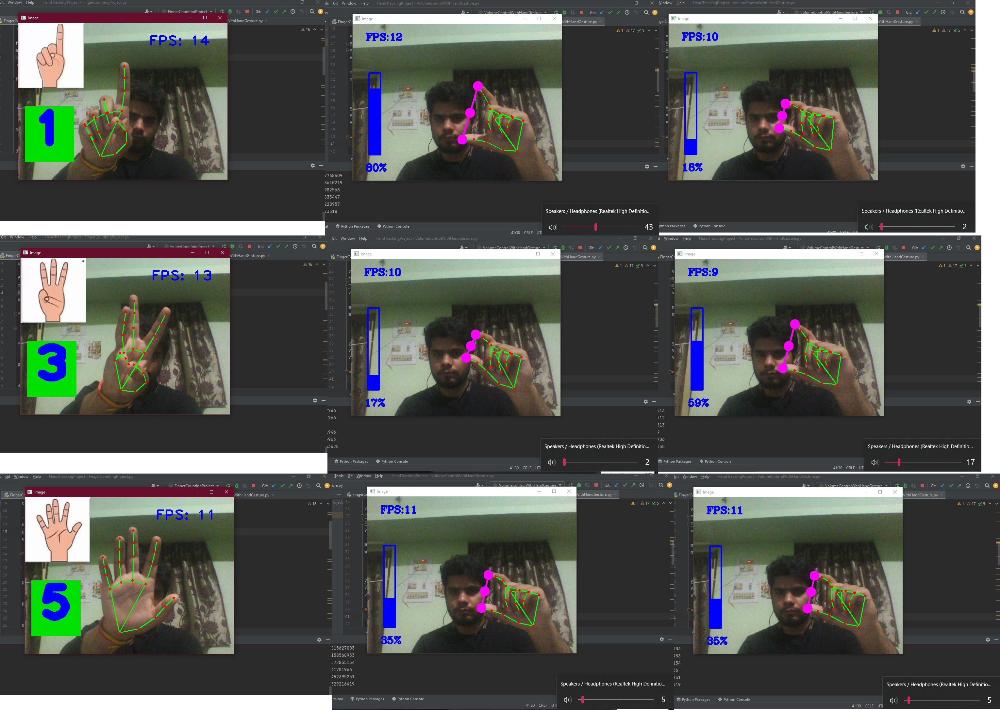
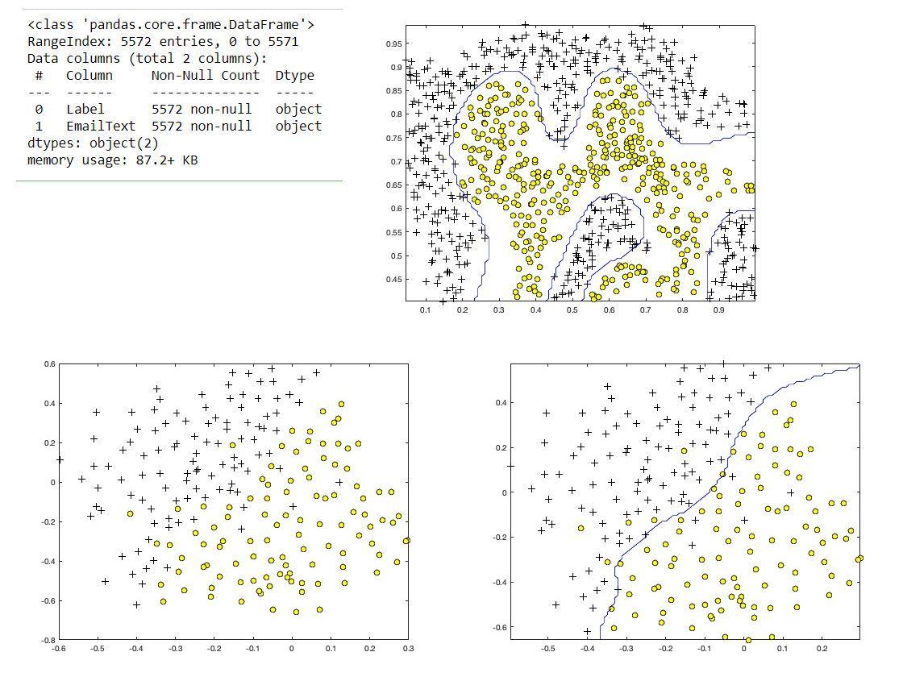
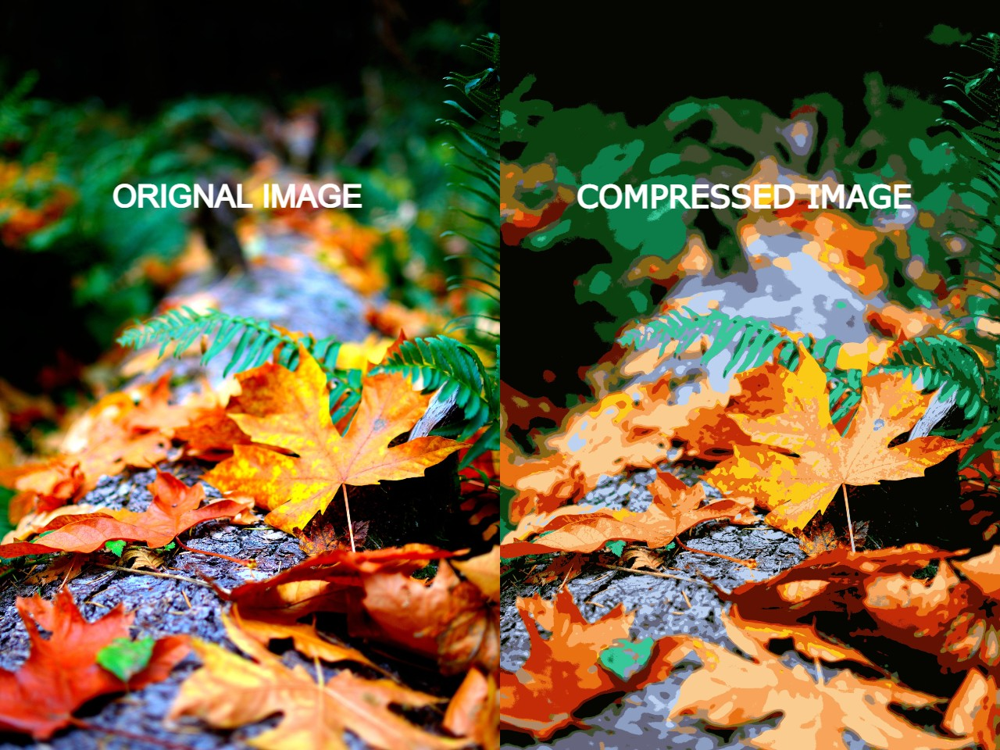
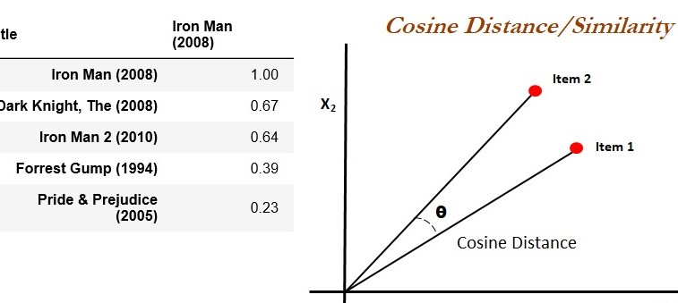

Key skills: Python, OpenCV, Keras/TensorFlow
Created a dataset using facial landmarks and regions of interest (ROI).
Fine-tune the MobileNet V2 architecture, a highly efficient architecture that can be applied to embedded
devices with limited computational capacity.
Obtained ~99% accuracy in our test set.


Key Skills: Machine Learning, Keras, TensorFlow, python.
Used NLTK and Word2Vec for Cleaning and Preprocessing of data.
Machine learning algorithms like SVM (Supervised Approach), K-means Clustering (Unsupervised Approach), etc. are applied.
Long Short Term Model (LSTM), an RNN is also used to obtain Maximum accuracy of ~81%.

Key Skills: Python, open CV, Image Processing, PyCaw(To access system controls).
Detected hand gestures counting numbers using fingers.
Adjusted system volume using hand gestures again with the help o fingertips. Used Mediapipe from Google ML solutions to enhance the accuracy of the module.

Key Skills:Python, SVM
Classify email based on spam and non-spam using SVM with an accuracy of about 98.5%.

Key Skills: K-means Clustering, PCA, Python
Compressed images by using Dimensionality Reduction through PCA and also with K-means Clustering Algorithm for image compression.

Key Skills: SQL, Tableau, Google Sheets, Bigquery.
Found two data i. e. Covid Deaths and Covid Vacination data from Our World in Data. Correlation in data is established using different queries in Bigquery. Visulaised the result using Tableau Pubic.

Key Skills: Pyhton, Cosine Similarity.
Recommended movies on the basis of given Input. Cosine Similarity is used to find relation in different movies on the basis of many parameters like Title, director, ratings, etc.